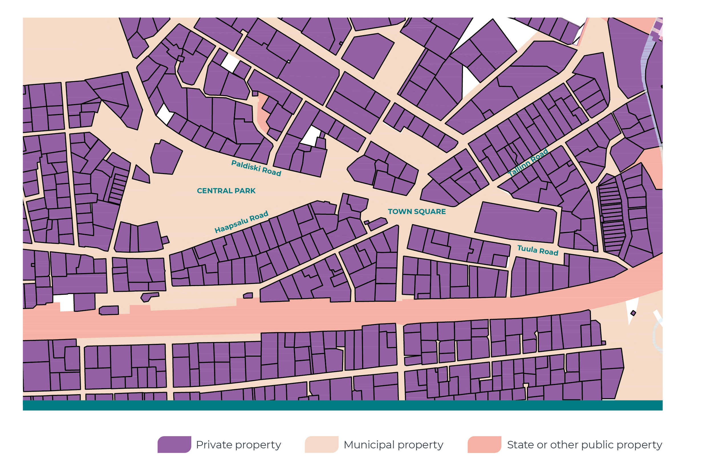
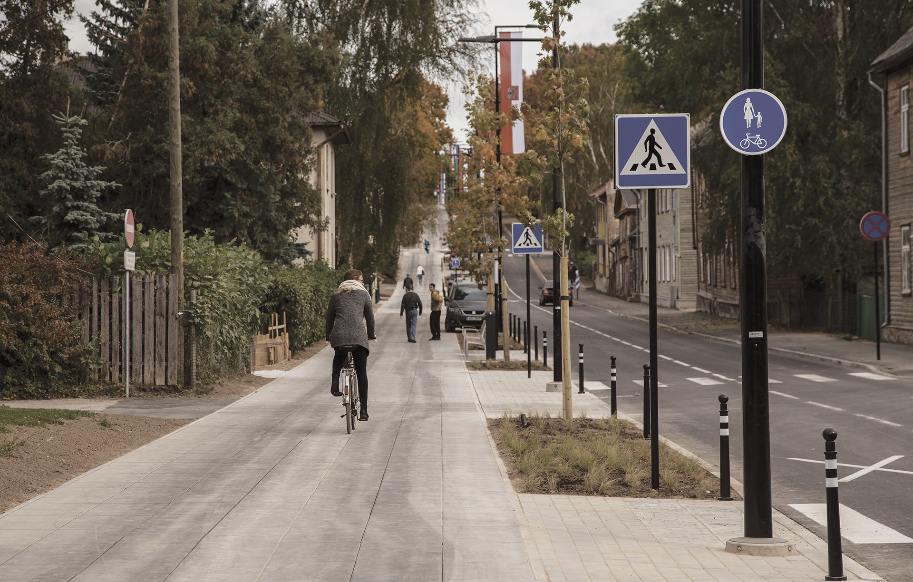
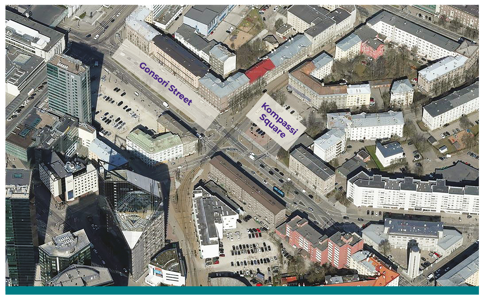
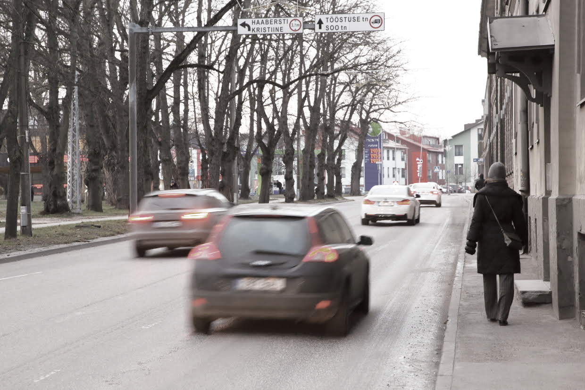
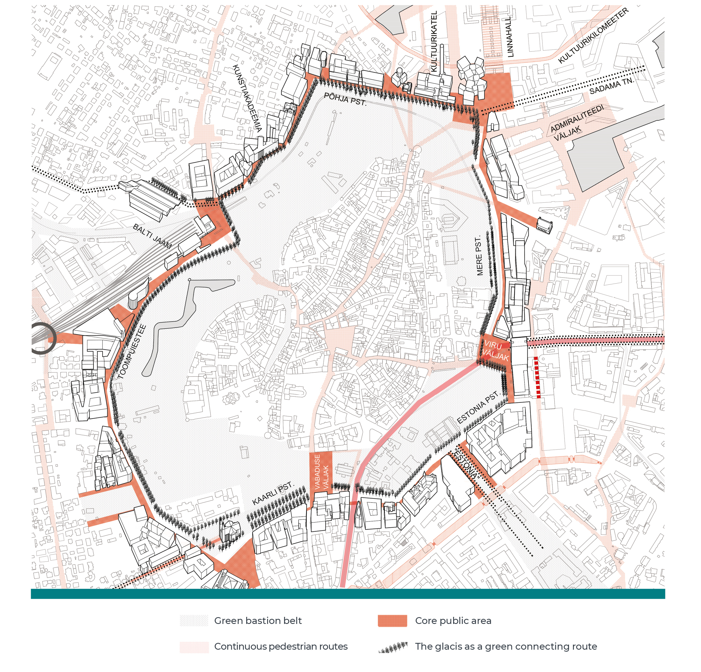

2.1 Public space as an interconnecting network within the living environment
- Maintaining and developing public space is a task for the public sector and requires creativity, professionalism and cooperation.
Every time we step out the front door or garden gate, we enter the public space. It is the common space that allows us to move between all non-public spaces. But public space is not only about mobility. It is a common living space, the integrated functioning of which determines the extent of social cohesion and the quality of the living environment. The UN-Habitat programme dealing with the future of cities and sustainable human settlements (United Nations 2017) defines public spaces as all places accessible and enjoyable by all for free and without a profit motive. It is our everyday living space but also a venue for discussions and demonstrations. Good public space helps strengthen communities, promote citizen participation, reduce segregation and encourage tolerance; therefore, the quality of public space can also be seen as a manifestation of the health of the society and democracy.
Good public space helps strengthen communities, promote citizen participation, reduce segregation and encourage tolerance.
Processes and decisions in different areas (transport, environmental protection, business, education, culture, etc.) affect our living environment and result in a multitude of spatial relationships that determine the functioning of the public space. This means that public space that is developed without an integrated vision is fragile and vulnerable. Public space is not an isolated element of landscape or technology; it is interconnected with the surrounding buildings and non-public spaces, creating integrated localities, both functionally and aesthetically.
This chapter will discuss the physical public space primarily within urban environments, the responsibility of the public sector for protecting it, and the treatment of the concept in legislation and governance. The introductory section will explain the components of public space and outline the basic requirements for good-quality public space. We will also pose the question of how the concept of public space has been treated in Estonian legislation since the restoration of the country’s independence and how it has been perceived by the public sector. Finally, we will propose a number of principles for the protection and improvement of public space.
Public space is a network connecting people’s homes, workplaces and other activity spaces
Throughout history, the primary and central function of public space as public property has been to connect people’s lives.
Understanding public space as a public thing dates back more than two thousand years. Roman private law already described res extra commercium– ‘a thing outside commerce’ – which was excluded from private ownership and could not be traded. This included res communes omnium– things naturally belonging to everyone, such as the air, the sea and flowing water – as well as res publicae – objects that could be owned privately but have been designated for public use in the interest of the common good – for example, riverbanks and public roads (Ilus 2000).
Throughout history, the primary and central function of public space as public property (res publicae) has been to connect people’s lives. From the point of view of the quality of the living environment, today this means that every person should perceive the space as pleasant, comfortable and safe, starting from their own doorstep, regardless of age, income or vehicle ownership. If we drew the movement trajectories and activity spaces of every single person on a map, we would see a network-like image. In cities, this image of public space would largely coincide with the street network, but is far more nuanced in reality.
Public space and ownership
Public space usually belongs to the state or municipality; occasionally it may be privately owned. The network-like nature of public space is best displayed on cadastral maps of cities, depicting ownership structure. Public property makes up an interconnected system, while private property consists of single separate parcels.
Figure 2.1.1. Map of ownership structure in the town of Keila

Source: Sfäär planeeringud 2019.
In addition to the street network, public space also comprises parks, waterbodies, squares and land under and around public buildings. It also includes a number of other public service networks necessary for the functioning of private property. For example, electricity, water and district heating for homes and businesses are provided through underground utility networks below public land. On the ground, networks for different modes of mobility and vehicles ensure the access of people and goods to private property. The public transport system is an integral part of the public space.
Public space can never be defined completely and comprehensively, as it may contain parts of private property, not accessible at any given time, accessible for a fee or only open for use by members of a specific community. Such semi-public spaces include fenced sports grounds, internal streets of shopping centres, courtyards of apartment buildings, and street cafés. Public space is diffuse, as it has properties that have an impact beyond its immediate physical surroundings. Views and environmental impact, as well as buildings and their facades are objects of common interest in the public space, influencing it both visually and through the activities taking place in the shared space.
The quality of public space is mainly determined by its continuity for all users
The chief characteristic of public space is free access to all in the physical, social and also financial sense. Free access has been guaranteed if the users of the space can carry out their everyday and social activities independently in a continuous space that does not contain barriers or interruptions. The network used by pedestrians is of central importance. Although the carriageway in the street is a necessary component of public space, the excessive speed of vehicles and traffic density may create a level of danger that effectively banishes the space from public use. In this case, every single crossing and footpath will become an essential element of the network. If these elements are too narrow, not interconnected, dangerous or unpleasant, the network will be interrupted because streets and crossings can no longer serve all users as a space for living and moving around.
Developing a continuous public space
Roosi Street in Tartu, renovated in 2016 in conjunction with the construction of the Estonian National Museum, establishes a pedestrian connection between the city centre and the museum with emphasis on both the overarching spatial design and specific solutions. This enhances the spatial perception of the museum not as a stand-alone item but a node in the public space network of central Tartu, also serving as a platform for further steps to improve the living environment in the neighbourhood.
Figure 2.1.2. Roosi Street in Tartu

Source: Triin Pitsi.
As a result of motorisation, public space has often been developed in an oversimplified fashion, considering it primarily as a transport infrastructure, focusing on passenger vehicles and the road network. The experience of numerous countries demonstrates that this can easily lead to reduced quality of the living environment and limited access (Gehl 2015). If public space does not operate as a human-friendly network, the people who would not otherwise drive a car, will start using one, inevitably leading to urban congestion. Well-interconnected public space with a focus on pedestrians also brings about active use of public transport. Although the opportunity to move in a passenger car is one aspect of the quality of public space, a good living environment is based on the principle that in the public space humans take precedence over vehicles.
As a result of motorisation, public space has often been developed in an oversimplified fashion, considering it primarily as a transport infrastructure, focusing on passenger vehicles and the road network.
Continuous public space is a globally important trend in the effort to improve the quality of living environments. One of the UN’s sustainable development goals for 2030 is guaranteeing universal access to inclusive and accessible public space and green areas, as well-designed and well-maintained continuous public space ensures lower crime rates, empowers socially excluded groups and serves as a prerequisite for the well-being of happy and healthy citizens. Good-quality public space is the basis for the economic, environmental and cultural competitiveness of cities (United Nations 2017). Project for Public Spaces (2007), a non-profit umbrella initiative for creating public spaces, lists rising property prices, increasing density of small shops and increasing sales among the economic benefits of public space. Good-quality public space reduces air and noise pollution and supports biodiversity.
Although the opportunity to move in a passenger car is one aspect of the quality of public space, a good living environment is based on the principle that in the public space humans take precedence over vehicles.
The primary characteristics of quality public space as a network is continuity, convenience and safety of trajectories for children, the elderly and disabled people, starting from every home, workplace and activity space, complemented by an integrated ecosystem. Good-quality public space is also characterised by the aesthetics, sensations and symbolic meanings associated with each of its single components – streets, squares and parks. The different wishes and resources of its users will be met by a multifaceted public space, allowing freedom of choice and self-organisation. The integrity and quality of public space is ensured only through the locality-specific spatial conceptualisation of all the aspects listed above during the stages of planning, design, construction and use of the space.
The concept of public space has not been defined in Estonian legislation
Just as the role of public law alongside private law is to allow private subjects to feel safe in the state and the society to develop, private space requires public space next to it so that the benefits of private space could be used (Paaver 2013). Public space does not generate profits but serves as a basis for business and the development of the living environment.
Estonian legislation provides no explicit definition of public space. While it does include the definition of a ‘public place’ (Article 2 of the Advertising Act, Article 54 of the Law Enforcement Act), this is focused on organising daily life, ensuring safety and maintaining order, rather than preserving, developing or improving the space.
Whose square?
The controversial handling of public space by the Estonian public sector, including state-owned enterprises, is perfectly illustrated by the state’s sale of the public Kompassi Square to a property developer in 2018, regardless of opposition from the city of Tallinn. The developer requested the use of the square for a high-rise building, citing a closed private garden as the only alternative. There is no legislation that prohibits such a sale, prevents the privatisation of public spaces, for example streets or parks, or requires a public consultation on the matter. The state has put municipalities in a situation that makes it difficult to develop or even maintain quality public space if the owner lacks the will to do so. Such a situation arises if the state or municipality only looks out for its financial interests, neglecting public space.
Figure 2.1.3. Kompassi Square in Tallinn

Source: Land Board.
The 1993–2002 version of Article 9(2) of the Law of Property Act included a definition essentially identical to the Roman res publica, with implications for land ownership: ‘A public thing is an object owned by the state or municipality that is, due to its communal nature, usable by everybody, such as territorial waters, inland seas, navigable waterbodies, public streets, squares and parks.’ This definition, which is no longer valid, served as a basis for land reform and, through this, largely generated the current structure of public space, as most public streets and parks were neither privatised nor returned to pre-war owners. Nevertheless, both the land reform and later transactions (sales of both state-owned and municipally owned land) have resulted in the privatisation of parts of public space. Our current legislation lacks a general concept akin to res publica, or the ‘public thing’, that could serve as the basis for establishing a clear and permanent scope for the concept of public space.
The integration and accessibility of public space are also influenced by the regulation of movement on private property. The 1993–2014 version of Article 142 of the Law of Property Act prohibited any presence on private property without the authorisation of the owner. In 2014, the provisions regarding the use of land belonging to another person were transferred to the General Part of the Environmental Code Act, with the addition of Article 33(3): ‘The owner shall not prohibit the use of a private road or path on foot, by bicycle or for moving in another similar manner where the use is based on established custom and is not burdensome on the owner.’ The provision has not yet taken root in everyday application but is helps to improve the continuity of public space.
Public space can also function on private land, but in that case, ensuring that the network remains an integrated whole, demands even more effort from the public sector. In recent years, the concept of public space has been used in a few planning documents and guidelines; for example, the 2018 guidelines from the Ministry of Finance for drafting comprehensive plans state that, as the concept has not been defined in legislation, ‘it is sensible to discuss topics related to public space and public values, and agree, define and determine them in the course of creating a comprehensive plan.’ The 2018 final report of the Spatial Design Expert Group also notes that ‘quality public space accessible to all is an important characteristic of a developed democratic state’. This means that planning on different levels is acknowledging the concept of public space, which has so far often been treated sporadically or neglected completely.
The public sector has not established itself as an advocate and commissioning party for public space
The Planning Act does not discuss or even mention public space. As a result, the focus of planning has shifted to either defining the specific application of the land in question or to specific objects, buildings, infrastructure or roads, rather than the common space connecting them. If local governments only focus on balancing individual interests through the legally prescribed procedure, and if there is no one to commission or advocate for public space, it can remain a secondary consideration in the work of spatial planners and architects. This has led to justified dissatisfaction among some citizens with the spatial plans or the space created on this basis.
A street for everyone?
The narrow footpath on Põhja puiestee in Tallinn excludes movement with a pram as well as walking side by side or passing somebody moving in the other direction, not to mention convenience and safety. The public space network is interrupted. There is enough space to widen the footpath even without reducing the number of lanes for cars, but the city government has failed to do this.
Figure 2.1.4. Põhja puiestee in Tallinn

Source: Reio Avaste.
In their spatial decision-making, local governments have, at times, given preference to private interests, harming the public space, with the explanation that there is no clear legal basis that demands the maintenance of the public space or its improvement by private owners. Some local governments have nevertheless strengthened the legal basis through adopting comprehensive plans that purposefully give value to the public space; for example, in the comprehensive plan for Tartu city centre, the public space has been highlighted on separate figures and in a separate chapter. However, slow documentary procedures and official spatial plans that are overly strict and fixed are not convenient tools for the flexible step-by-step improvement of the public space.
Planning on different levels is acknowledging the concept of public space, which has so far often been treated sporadically or neglected completely.
Streets and parks are mostly publicly owned, which, however, is no guarantee of a continuous public space. Streets are generally not built on the basis of detailed plans but road construction documents, which only cover engineering solutions and are not made public. Both spatial plans and road construction projects are mostly based on the standard EVS 843 (Urban streets), which considers roads, rather than the public space, as the integrated network. A car-centred focus on roads tends to dominate in urban spaces due to the mechanical application of standards and norms. Short-term spatial decisions regarding, for example, winter maintenance or traffic organisation during construction works, further leverage the overemphasis on passenger cars and neglect the pedestrian. In this way, the public sector can create even greater interruptions in the public space than private property.
Local authorities cannot ignore public space, as it exists in all settlements, has been shaped over a long period of time and is mostly in active use. Usually, municipalities manage almost the entire local public space and try to develop it in accordance with their means. But this has been largely dependent on the mindset of the officials of the specific municipality.
A car-centred focus on roads tends to dominate in urban spaces due to the mechanical application of standards and norms.
The Land Board as well as state-owned companies and local governments have privatised plots that are used as public space or have a natural potential to be planned as such (Figure 2.1.3). Under the current legislation, such transactions place the rights of both the urban population and the new owner on a shaky ground, with no predictability concerning the outcome of any dispute.
Nevertheless, some private owners have realised the need for public space and have developed it on their own, sometimes more efficiently than the municipality. This usually happens if one developer owns a large area. Public space adds value and increases the attractiveness of the area in the eyes of both users and businesses. Regrettably, such public spaces tend to remain unconnected to the wider network of public space, unless the municipality or owner pays sufficient attention to its maintenance and interconnection with the surroundings.
As the public sector has failed to consider public space in an informed fashion, the topic has largely remained in the hands of active citizens. Neighbourhood associations and interest groups have come up with initiatives that involve a vision for the public space, organised campaigns and taken a leading role either in cooperation or disputes with private owners and local governments. Important steps in order to increase the presentability of public spaces have been taken by the Estonian Association of Architects (e.g. the Estonia 100 architectural programme Good Public Space in cooperation with local governments). The increased activity of NGOs and sectoral organisations indicates public concerns about the continuity and quality of public space. To some extent, active citizens and NGOs have themselves stepped into the role as advocates or commissioners of public space. However, all such community action can only provide isolated and temporary solutions; it does not replace continuous expert-knowledge-based work to improve the public space as a whole.
It is important that the state and state-owned enterprises themselves do not harm the public space in their role as commissioning parties in large development projects.
National and municipal authorities, whose decisions create or change the public space, often limit themselves to their narrow area focus. There are no institutions that would act as coordinators between different authorities and protect public space as an integral network, create appropriate solutions for this and cooperate purposefully with the private sector in the interests of the accessibility and human dimension of the public space.
The public space can only function as a network if the state and local governments emphasise it in spatial decisions at every level
Public space is a complex network and an ever-changing structure. As with utility networks (water, electricity, etc.), public space also needs continuous work by the operator for it to function and develop. The operator of the public space network is the public sector, which has the ability to protect and improve it.
Some principles and recommendations
As a model for defining public space and its quality criteria, the UN guidelines Global Public Space Toolkit: From Global Principles to Local Policies and Practice (2015) provide diverse practical examples for cities and national governments in the field of spatial design and policy, underlining the value of civil society. Global Street Design Guides by NACTO and the Global Designing Cities Initiative focus on public space and rethinking urban streets. It is also possible to make use of the simple checklists and guidelines of the Project for Public Spaces – a central organisation for place-making.
As the operator, a local government is entitled and required to protect public space through all its decisions. It is the state’s role to be a partner for cities and other municipalities, shaping the legal space and, in exceptional cases, also protecting the citizens if the municipality fails to advocate sufficiently for the public space. It is also important that the state and state-owned enterprises do not harm the public space themselves in their role as commissioning parties in large development projects.
At municipal and state level, it is equally important to consider setting up competent teams that can defend the public space as a continuous network through cooperation between different areas. This would not entail an increase in the administrative burden but rather replace formal procedures with continuous substantive work.
As the public space makes up a large part of the everyday living environment, it is sensible to involve the public in making decisions, formally outside the scope of planning regulations but with considerable impact on the public space, as many spatial decisions (e.g. on whether a plot will remain a public park, a street, a playground, a grove or whether a particular passageway will remain open) are not made during the planning procedure but often before or after that, for example, by way of purchase transactions or during traffic planning. In an ideal situation, the public space would be publicly owned on a permanent basis; however, considering Estonia’s courageous privatisation decisions so far, the state has already placed itself in a position where it needs to maintain the continuity and quality of public space on numerous private properties. It is important that the public sector carefully consider its transactions to privatise land that is integral to the public space, so as to ensure that the public space is safeguarded; the public sector must also be smart about acquiring new lands as necessary.
It would not be sensible for every individual municipality to create definitions of public space in their regulations or spatial plans. Clear and uniform general principles should be applied nationally. The final report by the Spatial Design Expert Group also stresses the need for legislative clarity:
Legislation must establish a clearer basis for spatial design, covering all spatial decisions in an interconnected way. The main principles and concepts of spatial design must be treated in a coherent way in the law. Underlining the importance of public space in spatial design and defining quality requirements will provide a better basis for creating a good-quality public space and built environment, as well as for spatial impact assessments of draft legislation.
Both the state and local governments need to acknowledge their role as the operators of the public space networks or commissioning parties for public space, while respecting all users of the space.
A vision of a continuous urban space
The interconnectedness, density and diversity of public space as an integral network plays a central role in improving the spatial quality of a city. For example, the green belt surrounding the old town of Tallinn can be developed as a part of the public space, allowing the convenient crossing of carriageways, widening pedestrian areas and opening up new passageways through city blocks. This allows for creating convenient pedestrian connections between a number of public buildings, squares, streets and parks of citywide importance, giving Tallinn an opportunity to develop into a considerably more human-friendly city.
Figure 2.1.5. Excerpt from the Estonian Academy of Arts project ‘Unfinished City’

Source: Kavakava Architects 2019.
Summary
It is the task of a well-functioning society to make sure that people feel well not only at home, at work or in their car but also in the public space. Public space is influenced by almost every spatial decision. The core task of the public sector is protecting and leveraging the positive impact resulting from all spatial decisions and solutions, as well as preventing and blocking negative impacts. The integrity of public space is a universal public interest and cannot be managed by way of giving preference to an individual topic or user; for example, by treating roads or the freedoms of the property owner as superior. In addition to protection, the public space also needs strategic development based on vision documents, including constant interconnection with any new building, road or private development project. Public space as a network also provides a firmer basis for the work of city architects and helps create balanced planning solutions.
Public space needs strategic development based on vision documents, including constant interconnection with any new building, road or private development project.
Although recent legislation and governance practice in Estonia have been characterised by a tendency for the public sector to focus on processing regulative documents instead of improving the spatial environment, a more substantive acknowledgement of the future of space and the living environment is emerging. In 2015, the principle of improving the living environment was added to the Planning Act (Article 8) and the objective of ensuring the purposeful functionality and usability of the built environment to the Building Code (Article 1). Those general provisions will remain merely declarative if the state and local governments do not launch informed efforts towards the continuous improvement of the public space, indispensable for developing the living environment as a whole.
Unlike in business projects, the public sector can strategically guide the development of the public space in an informed manner. The public space and its development affect private investments, the choices of developers, and where individuals choose to live and work; this cannot be regulated rigidly through spatial plans. It would be sensible to adopt a definition of public or common space not only as part of the legislative framework but also as a foundation for unifying spatial decisions, which are currently fragmented between different fields.
Public space as a network with a significant impact on the quality of life calls for constant attention and the desire to improve it. In addition to technical knowledge and skills, this requires creativity, good spatial perception and synergy between different fields. A public sector that sees the improvement of the living environment as a worthwhile goal is one that thinks and acts in the common interest of its citizens.
One of the proposals presented in the 2018 final report of the Spatial Design Expert Group is to extend the principle of improving the living environment more clearly to cover the entire process of spatial design. For this to work, businesses and citizens, local governments and the state should all consider the value of the public space in their decisions.
As security and well-being are more likely to grow out of the active use of space (Worpole and Knox 2007), it is important to value the free use of space and allow it to self-organise. Individual and collaborative creativity also promote the feeling of community and ownership among citizens. Freeing ourselves from formalism in spatial design requires a change in mindset but also legislative support. The public space will be improved if the integrity and diversity of the network is continuously appreciated both in large decisions and the detail. This helps to maintain and improve the health of the society and democracy in general.
References
Gehl, J. 2015. Linnad inimestele. Tallinn: Eesti Kunstiakadeemia, Yoko Oma.
Ilus, E. 2000. Rooma eraõiguse alused. Tallinn: Ilo Print.
Paaver, T. 2013. Mis on avalik ruum – avaliku ruumi käsitlustest ruumilises planeerimises. –Roose, A. (toim.). Peatükke planeerimisest. Protsesse, meetodeid ja näiteid. Tartu: Tartu Ülikool, 51–62.
Project for Public Spaces 2007. What is placemaking? https://www.pps.org/article/what-is-placemaking.
United Nations 2017. New Urban Agenda. United Nations Conference on Housing and Sustainable Urban Development (Habitat III).
Worpole, K., Knox, K. 2007. The social value of public spaces. Joseph Rowntree Foundation. https://www.jrf.org.uk/report/social-value-public-spaces